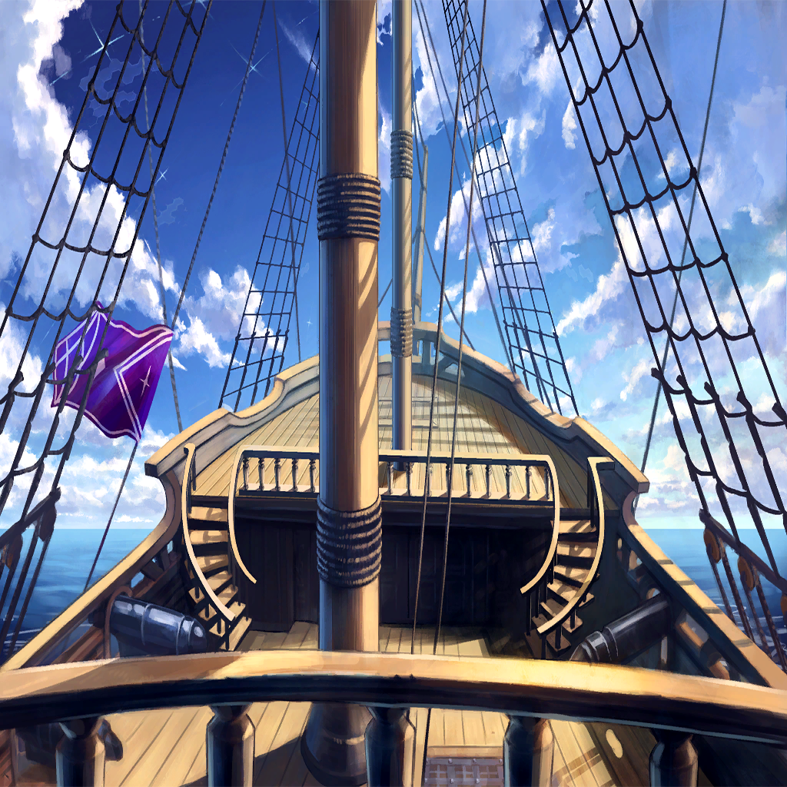

|
 |
| 罪竜アスモデウス |
――…ァ!!! |

シュメイア |
…っ、凄まじい圧力…
まるで魂からマギルを
絞り出しているような…っ |
| ニドヘガル |
これが、楔とやらに魅入られた竜の末路
そういうことか |
シュメイア |
みたい、だね… |
| ニドヘガル |
…そして、お前も |
シュメイア |
…ごめん。これ以上の援護は無理 |
シュメイア |
竜体を晒したままぶつかれば、
おそらく僕も彼女の内の罪のマギルに
引き摺られてあの―― |
 |
|
シュメイア |
あの、獣の姿に変わってしまう |
| ニドヘガル |
チッ…面倒な話だ
ふたり掛かりであれば、
封じ込めも可能だと踏んだんだがな… |
シュメイア |
待ちたまえ
アレは君にとっても毒だ
下手に触れれば、その竜体も |
| ニドヘガル |
戦えば、傷を負う
時にはそれによって死に至る
…生命にとって、当たり前の法則だ |
シュメイア |
死を避けようとするのもまた、
生命の在り方のひとつだろう？
とにかく、今は被害を最小限に―― |
| 罪竜アスモデウス |
――ォァァァアアアアアアアア!!! |
 |
| ニドヘガル |
なんだ？ 唐突に…消えた？ |
シュメイア |
というより、“回収”された―― |
シュメイア |
彼女は傲慢の軍勢が撤退する為の、
目くらましに使われたようだね |
| ニドヘガル |
人の手を借り、オピネウスに一撃
くれてやりはしたが… |
シュメイア |
ああ、連中はまだやる気のようだ
…これはもうひと波乱、ありそうだね |
| ニドヘガル |
………… |
シュメイア |
こちらも相当のマギルを消費した
いったん戻ろう |
| ニドヘガル |
…ああ |

シャヘル |
退きましたか。惜しい
もう少し踏み込んでくれば、
シュメイア様の楔を活性化することも―― |
シャヘル |
…まあ、急ぐ必要はありませんか
“どうせここで、
すべてが終わるのですから” |
 |
| マーシア |
…まだ、
予断を許す状況ではありませんが |
| マーシア |
皆様のご助力で、
なんとか今日を生き抜くことができました |
シュメイア |
気にしないでくれ
僕たちが勝手にやったことなんだから |
| カルネ |
…役に立ったなら、嬉しい |
| マーシア |
ええ、ええ！
おふたりの活躍は、まさに百人力でした！ |
| マーシア |
ニドヘガルも、よく頑張りましたね～ |
| ニドヘガル |
撫でるな…！ |
| マーシア |
えー？ ご褒美ですよ？ |
| ニドヘガル |
誰にとってのだ！ まったく… |
| ニドヘガル |
だが、状況は変わらない
俺たちの住処はいまだ、
傲慢の軍勢の脅威にさらされている |
| ニドヘガル |
それに、アスモデウス…
あの“獣”までいる
対して、こちらは―― |
シュメイア |
…手の内は、ほぼ晒してしまったか
必要だったとはいえ、手痛いね |
| ニドヘガル |
この状況…時を掛ければ掛けるほど、
俺たちの不利となる |
シュメイア |
いや、そうとは言い切れないよ。君 |
| ニドヘガル |
なんだと…？ |
シュメイア |
ちょうど今頃、届いてるはずさ
僕たちの切り札への“救援要請”がね―― |
 |
| リンドレイク |
…行くつもりか、女 |
| ローレアム |
うん。だってマティアについて行けば、
この層から罪を切り離す方法を
教えてくれるって言うから |
| リンドレイク |
…そうか |
| ローレアム |
…ついて来てくれても、いいんだよ？ |
| リンドレイク |
バカを言え
楔同士は共鳴する――
この身ももはや、その一部 |
| リンドレイク |
であれば、船の動力に不具合が
出て困るのは貴様らだ |
| ローレアム |
そっかぁ… |
| リンドレイク |
気にせず旅立つがいい、ローレアム
その手に赤の剣がある限り、
貴様はどこに在っても我が庇護の下にある |
| ローレアム |
うん？ どういうこと？ |
| リンドレイク |
そこまで言わねばわからないか… |
| リンドレイク |
この偽りの空の下にある限り、
我ら竜と人はどこまでも運命共同体だ
だからこそ―― |
| リンドレイク |
――お前は、決してひとりではない
どんなことがあろうともな |
| ローレアム |
―――― |
| ローレアム |
うん…うん！
お土産いっぱい持って帰ってくるから、
待っててね！ |
| リンドレイク |
いらん。ただ――無事に戻ってこい |
| ローレアム |
うん…っ |
|  |
| ラオン |
よーし、全員乗ったな？
それじゃ、暴食の層に向けて――出航だ！ |

ワギナオ |
―――― |
ワギナオ |
（結局、あれ以来ザフィリスの声は
聞こえない…） |
ワギナオ |
（一体何が起こっている？
俺は何かを間違えたのか？） |
ワギナオ |
（いや、例えそうだとしても――！） |
| |
胸に去来する、いくつもの不安
それらを呑み込んで、
俺は空を進む船の帆先を見る |
| |
暴食の層。例え記憶の再現だろうと
遠い未来に、我が故郷となるその場所を
この手で救えると、そう―― |
| |
その時の俺は、信じていた |